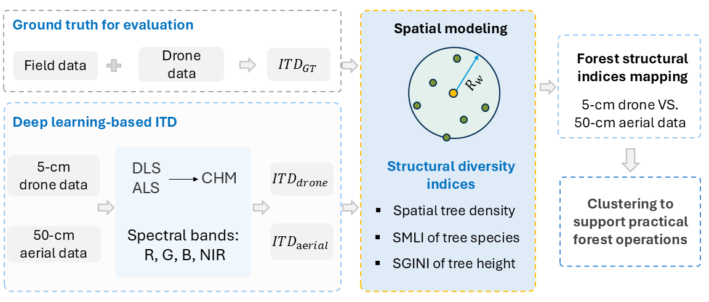
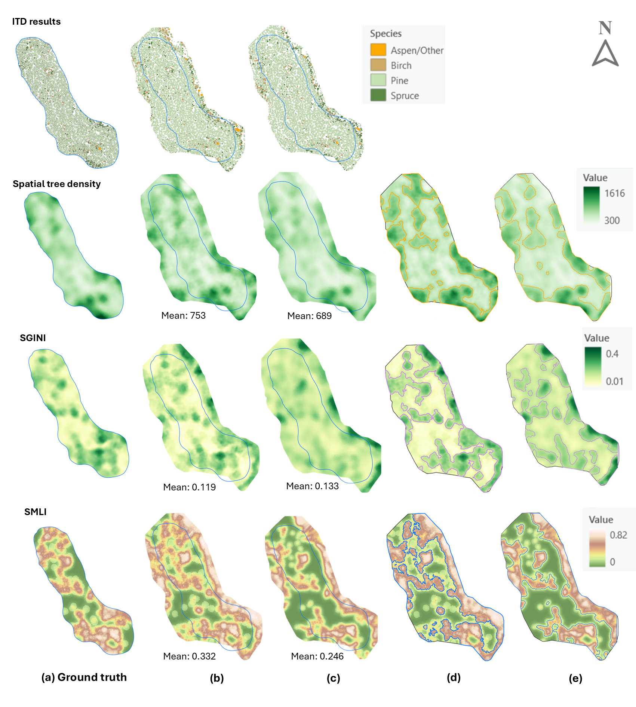

Spatially informed indices
A tree-centered moving-window framework captures local horizontal and vertical forest structure using SDen, SGINI, and SMLI.
Spatially informed structural indices and a comparison of 5-cm drone and 50-cm aerial remote sensing data.
This study presents a spatially informed framework for mapping tree-level structural diversity in boreal forests using multi-source remote sensing data. Individual tree attributes are analyzed within a radius-defined moving window to characterize local forest structure through three indices: spatial tree density (SDen), the spatial Gini index of tree height (SGINI), and the spatial mingling index of tree species (SMLI).
We evaluate the framework using 5-cm drone and 50-cm aerial datasets to investigate how spatial resolution affects forest structural diversity mapping. Drone data enable more accurate tree detection and structural mapping, while aerial data can capture broader spatial patterns and offer potential for large-area forest assessment and management.
A tree-centered moving-window framework captures local horizontal and vertical forest structure using SDen, SGINI, and SMLI.
A comparison of 5-cm drone and 50-cm aerial datasets evaluates mapping accuracy and the trade-off between fine spatial detail and broader coverage.
Spatial interpolation and threshold-based clustering identify structural patterns and salient regions relevant to forest thinning and other operations.
The workflow begins with individual tree detection and tree-height estimation from multispectral orthophotos and LiDAR-derived canopy height models. A 10-m-radius moving window is then used to calculate SDen, SGINI, and SMLI for each tree. The resulting indices are mapped through spatial interpolation, compared across data sources, and used to identify salient regions through threshold-based clustering.

Comparison of forest structural index mapping and clustering results derived from 5-cm drone and 50-cm aerial datasets. Drone-based mapping offers higher accuracy, while the aerial data retain broadly comparable spatial patterns.

Future research will focus on improving individual tree detection in structurally complex boreal forests, particularly the detection of understory trees that are occluded by dominant tree canopies and are often missed in overhead imagery.
Zhu Mao, Omid Abdi, Ville Laamanen, Veli-Pekka Kivinen, and Jori Uusitalo
Manuscript. Publication details and DOI will be added when available.